Dean guide
This chapter is for the Dean of Student Affairs. Every event proposal from every club passes through your gate. You sanction the budget line by line, and your approval publishes the event unless the Vice-Chancellor also has to approve it. You also manage venues and resolve venue clashes, and you can see the events calendar, the semester overview and the semester report.
How a proposal moves
A club's proposal goes to the Cultural Society (cultural and literary clubs only), then to you (always: the app does not allow a route without the Dean, so someone is always accountable for the money), then to the Vice-Chancellor (only above ₹50,000 or for a fest), and is then published. See the approval flow for the diagram.
Signing in
Sign in with your Institutional email and Password, click I have an authenticator code, type the 6-digit code from your authenticator app, and click Sign in. The Dean cannot sign in without the code. Approvers commit college money, so a password alone is not enough, and every decision is marked MFA in the approval trail. See the Cultural Society guide for a picture of the form.
What you see after signing in
You start on Dean approvals. The side menu has:
- Dean approvals: proposals waiting at your gate.
- Venues: every venue and booking, any clashes, and moving events.
- Calendar: every venue booking, hour by hour.
- This semester: running totals and things to chase up.
- Semester report: attendance and money for the semester.
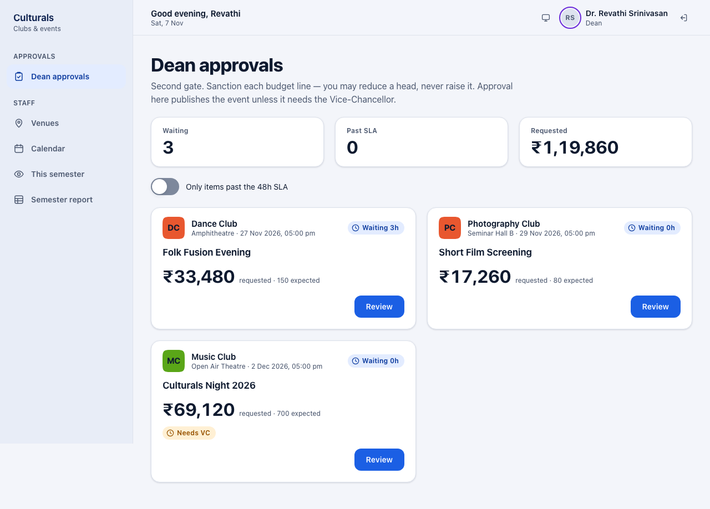
The figures at the top show how many proposals are Waiting, how many are Past SLA (more than 48 hours at your gate) and the total Requested. Turn on Only items past the 48h SLA to see only the late ones. A Needs VC tag means the proposal goes on to the Vice-Chancellor after you.
In the demo data, Folk Fusion Evening (Dance Club) has been approved by the Cultural Society and is waiting for you. It stays pending in this guide.
Review a proposal
- On a card, click Review.
- The proposal page shows: - The route: which gates are done (with who approved and when), which gate it is at now, and which are Not needed. - Requested, Expected (people) and At this gate (how long it has waited). - Budget: the club's lines. - Approval trail: earlier decisions and comments, for example the Cultural Society's note. - Your decision, with Sanction by line.
The example below is Short Film Screening. You returned it once (see Decided proposals); the club revised it and resubmitted it, and the Cultural Society has approved the new version.
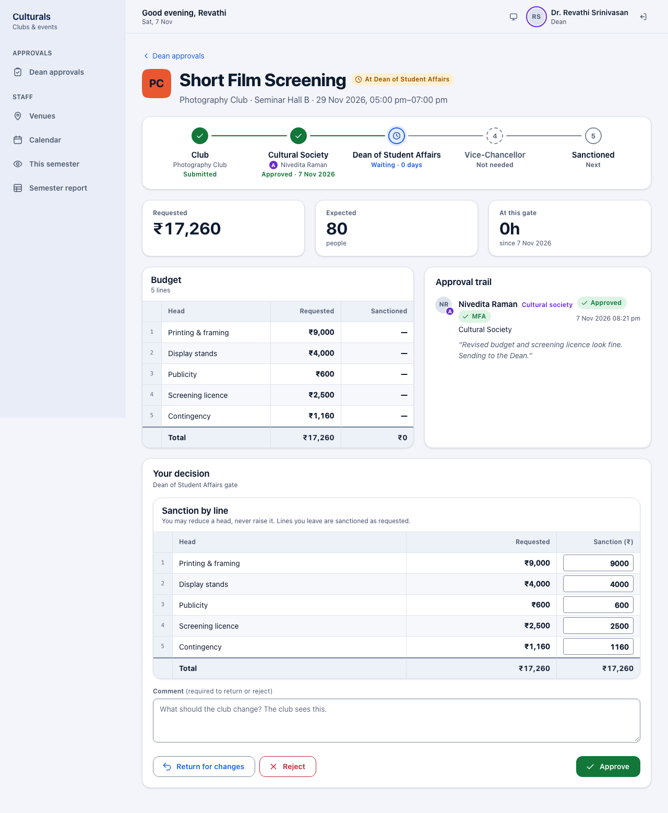
Sanction the budget and decide
In Sanction by line, each line starts at the amount requested.
- To give less for a line, type the lower amount in its Sanction (₹) box. The total updates.
- You cannot raise a line above what the club asked for. If you type a higher amount, the line turns red and the app warns that the server will refuse it.
- Lines you leave alone are sanctioned as requested.
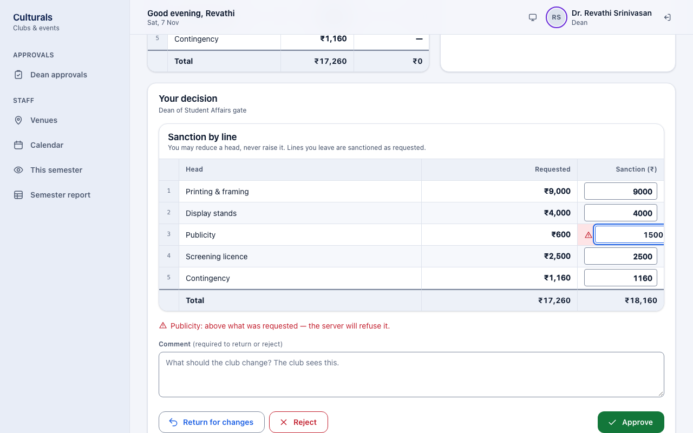
Then choose:
- Approve: sanctions the amounts shown. The event is published unless it needs the Vice-Chancellor, in which case it moves to the Vice-Chancellor's queue.
- Return for changes: the club can edit and resubmit. The new version starts again at the first gate.
- Reject: the proposal is closed. This is final.
A Comment is optional to approve and required to return or reject. The club sees it, and its office bearers are notified when you return or reject.
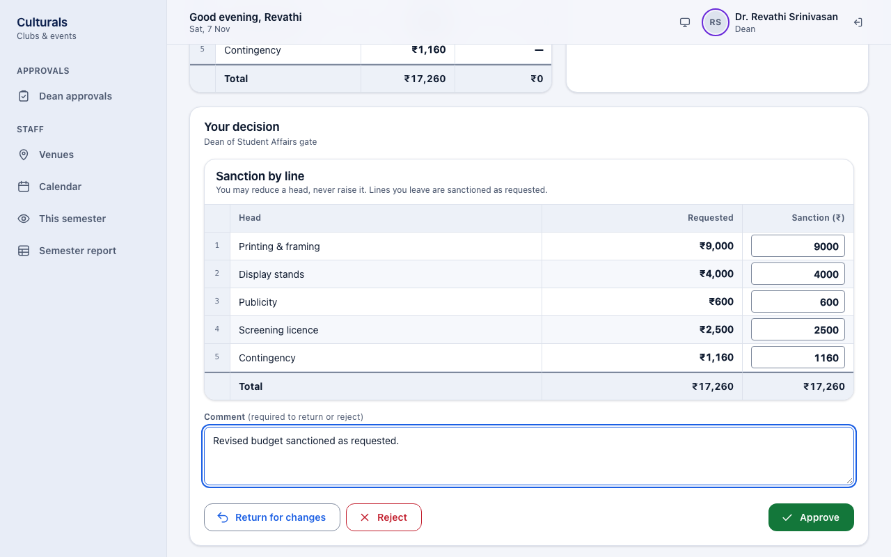
After you click Approve, you return to the queue with a confirmation such as Approved: Short Film Screening.
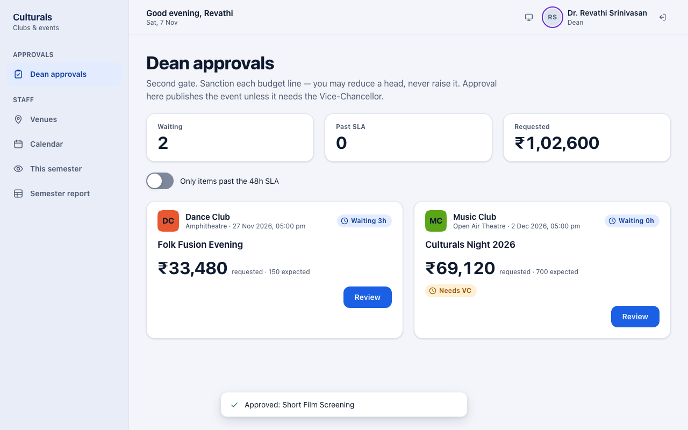
If you open the proposal again, the route ends in Sanctioned · Published, the Sanctioned column is filled in, and your decision is in the trail.
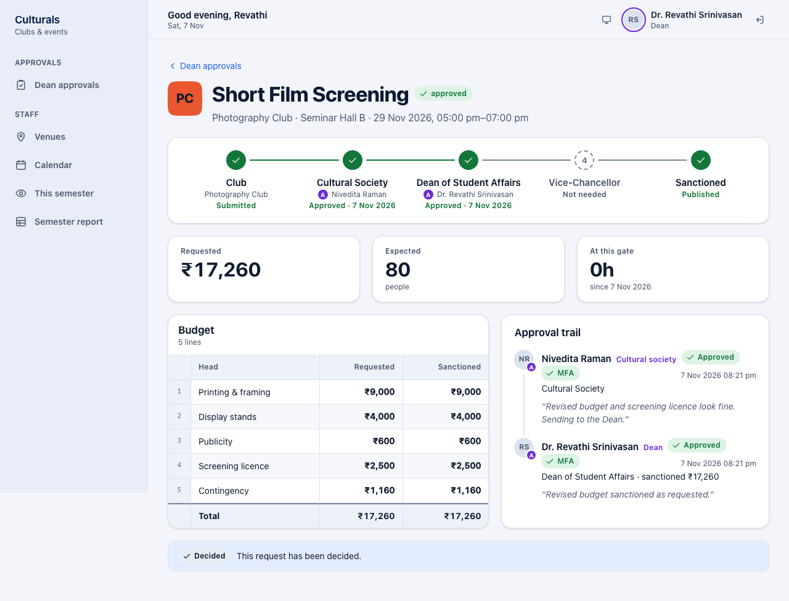
Proposals that need the Vice-Chancellor
When the budget is above ₹50,000 (or the event is part of a fest), the Requested figure says Goes to the Vice-Chancellor and why. Your approval sanctions the budget and passes the proposal to the Vice-Chancellor; it is not published yet.
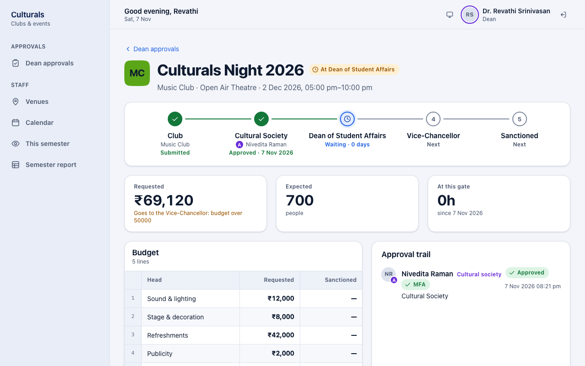
Decided proposals: four examples
The demo data has one proposal for each outcome. A decided proposal shows its final state next to the title, a route with the deciding gate marked, and every decision with its comment in the Approval trail. The decision panel is replaced by This request has been decided.
- Pending: Folk Fusion Evening waits in your queue (see the first picture above).
- Rejected: Late-Night Improv Marathon (Theatre Club). The Society approved it; the Dean rejected it because it "runs past the 10 pm campus curfew and has no security plan for 300 people". The route shows a red cross at the Dean. A rejected proposal cannot be resubmitted.
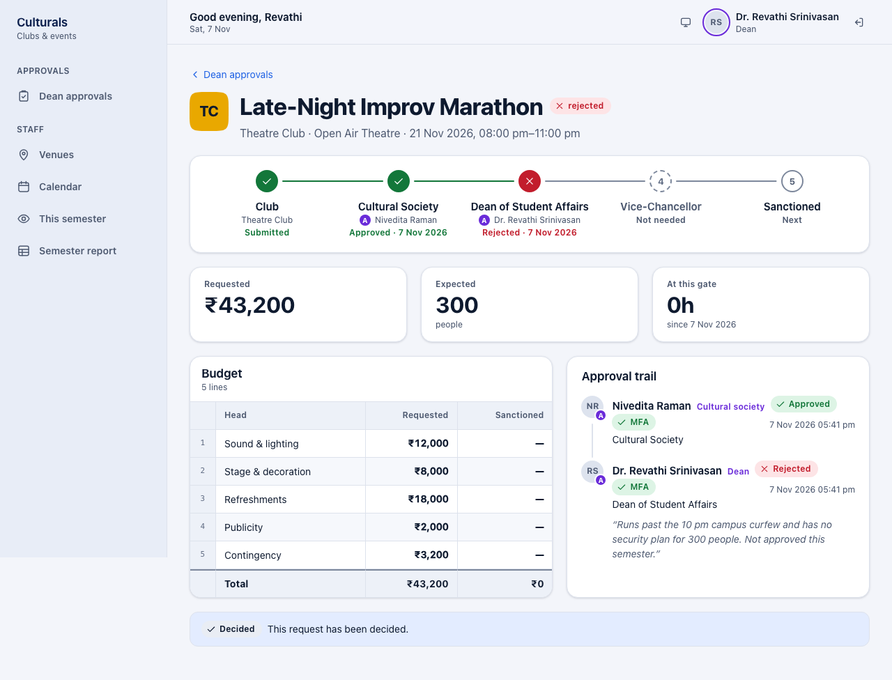
- Returned: Short Film Screening, first version. The Dean returned it asking to trim publicity and add the screening licence. The route shows the return arrow at the Dean. The club then edited and resubmitted it, which created the new version you approved above.
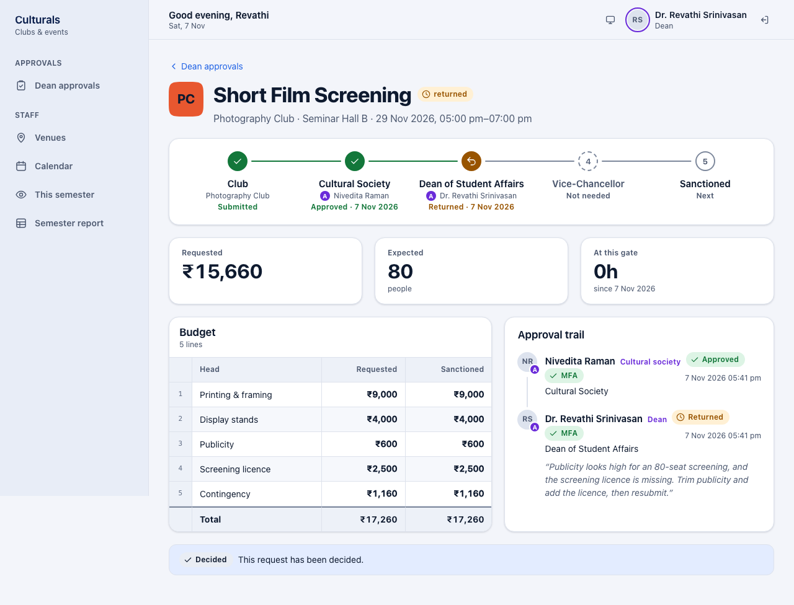
- Approved: Carnatic Music Recital (Music Club). Approved by the Society and the Dean and published. Here the Dean reduced Sound & lighting from ₹12,000 to ₹10,800. The reduced line is highlighted with the original amount struck through, and the trail shows the total going from ₹36,720 to ₹35,520.
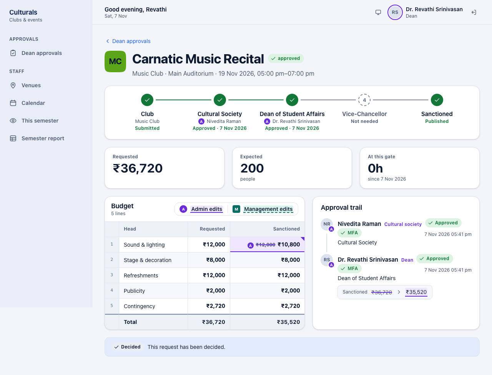
Resolve a venue clash
Two events in the same venue at overlapping times (counting the 30-minute setup buffer) are a clash. Neither can be approved, at any gate, until one moves. The app does not pick a winner; you decide which event moves.
- Open Venues. The Clashes figure counts clashes on all dates, and a red box lists each clashing pair side by side, with whether each is a Pending request or Confirmed.
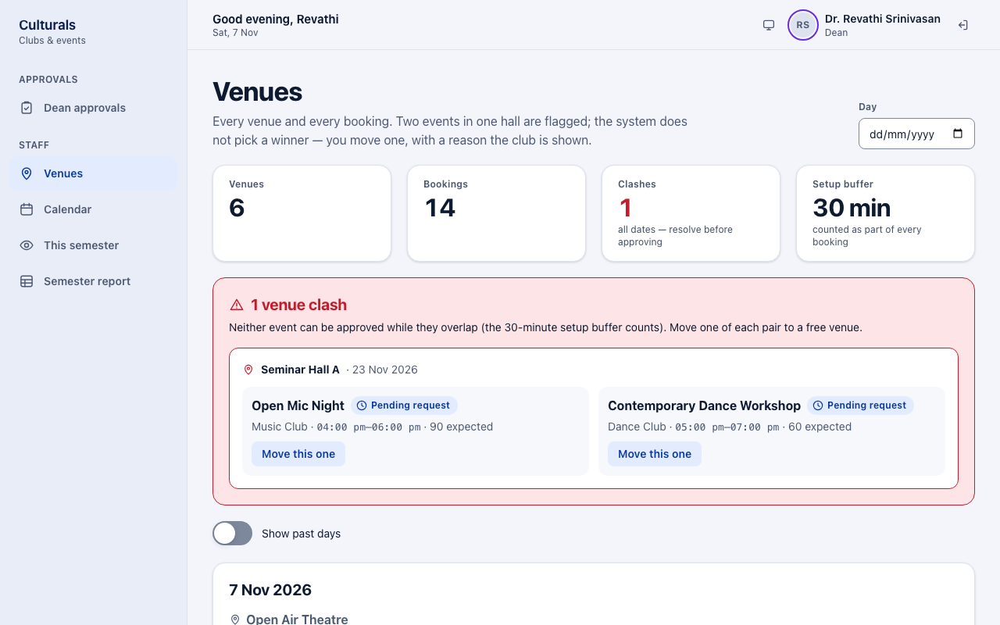
- Under the event that should move, click Move this one.
- In Move to, pick a venue. Each choice says whether it is free; venues that are taken or too small for the expected crowd cannot be picked.
- In Reason (the club sees this), explain the move.
- Click Move, or Cancel to close the form without changing anything.
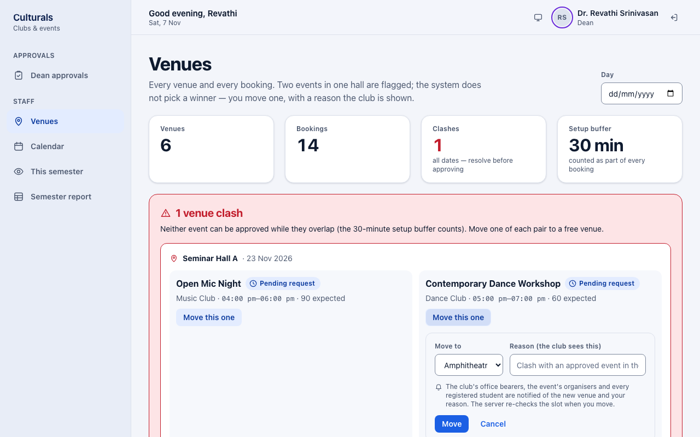
When you move an event, the club's office bearers, the event's organisers and every registered student are notified of the new venue and your reason. The app checks the slot again when you click Move, so if someone has just booked the venue, the move is refused.
Below the clash box, Venues lists every upcoming booking by day and venue. Each booking is marked Confirmed (approved) or Pencilled (still in approval). You can also move any single booking with Move venue. Pick a Day to see one date, or turn on Show past days.
Calendar
Calendar shows the same bookings as a week-by-week grid. It is read-only; you move events from Venues.
- Use Previous week, Today and Next week to change the week.
- Each day in the week strip shows how many bookings it has. A red dot marks a day with a clash. Click a day to open it.
- The day opens as a grid: venues across the top, one row per hour. A booking with a solid outline is approved; a dashed one marked requested is still going through approval.
- A slot holding two bookings in one venue turns red and says Clash, and the pair is listed above the grid.
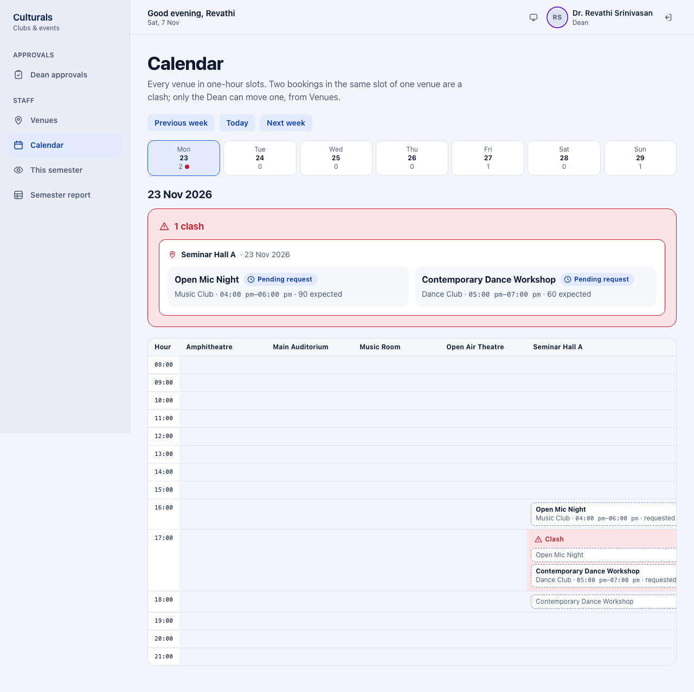
Bookings are in whole hours. If the grid is wider than the screen, scroll it sideways to see the other venues. The Cultural Society and the Vice-Chancellor see the same calendar.
This semester
This semester shows pending approvals by gate, items Past SLA, the number of Venue clashes (with Open calendar), active clubs, how well door scanning is capturing attendance, completed events still missing a report, photos or social links, venue use and inactive clubs. Items waiting past the SLA are listed with a link to each proposal.
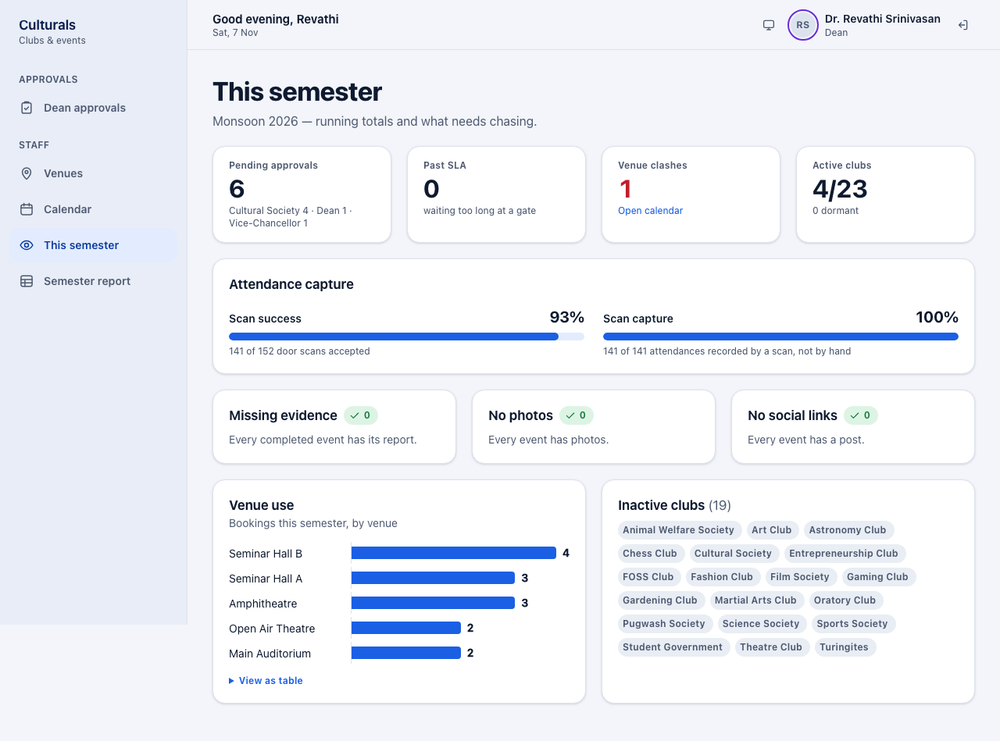
Semester report
Semester report shows totals for completed events: events run, attendance, unique students, external guests, money sanctioned against money spent, and attendance by club, category and department, then a table of events. It has totals only, no individual student records. Click Download CSV to save it.
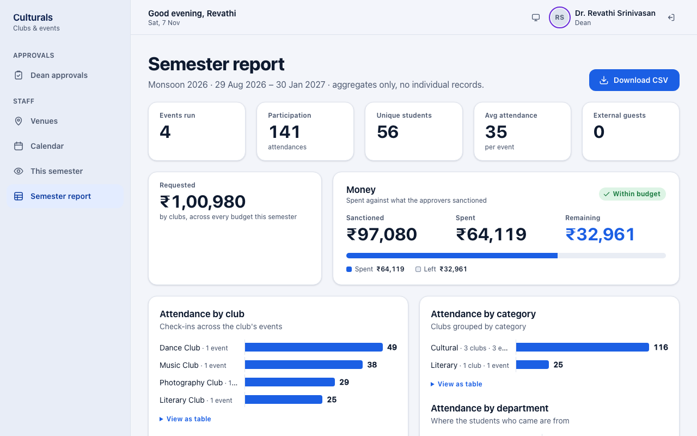
Good to know
- Why can't I approve this? Usually a venue clash. Move one of the events on Venues first. If the error says a second factor is required, sign out and sign in again with your authenticator code.
- Can I give a club more than it asked for? No. Ask the club to return a revised proposal.
- Does my approval publish the event? Yes, unless the proposal shows Needs VC. Then it goes to the Vice-Chancellor.
- Return or reject? Return when the club can fix the proposal: it comes back after editing. Reject only when it should not run at all; the club cannot resubmit it.
- Covering for someone? If you are covering another approver's gate, a note at the top of the queue says so. The trail records both names, and every decision while covering needs a session signed in with the authenticator code.
- Notifications: clubs are notified when you return or reject a proposal, and everyone affected is notified when you move an event. There is no notification inbox on the staff screens; use the queues and This semester to see what needs you.
Known issues
- The staff screens have no list of decided proposals. The queues show only pending items, so a rejected, returned or approved proposal can only be opened from a direct link. The four examples above were opened that way.
- A resubmitted proposal opens with an empty approval trail; the earlier return and its comment stay on the old request, and nothing links the two.
- The Vice-Chancellor reason is shown as a raw number ("budget over 50000") rather than "₹50,000".
- On a decided proposal the status tag shows the raw lowercase state ("approved", "rejected", "returned").
- In the Move this one form at desktop width, the Move to list is narrow and cuts off venue names ("Amphitheatr…").